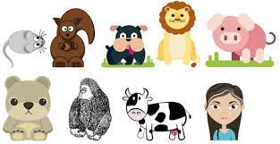

De acuerdo con el lugar del desarrollo del embrión, se presentan las siguientes clasificaciones:
| Tipos |
Características |
Imagen |
| Ovíparos |
- El desarrollo embrionario se produce en el interior de un huevo gracias a las sustancias nutritivas que contiene y que forman el vitelo nutritivo. Estas sustancias nutren al embrión durante su desarrollo.
- En el caso de los animales acuáticos, para evitar que los huevos sean desplazados por el agua, estos poseen mecanismos de flotación, o bien, filamentos. Los huevos depositados en el medio terrestre están recubiertos de una envoltura protectora para evitar su desecación.
|
 |
| Vivíparos |
- El embrión se desarrolla en el interior del útero materno, donde la placenta le proporciona protección y alimento. La placenta es un tejido formado durante el embarazo y sirve para intercambiar nutrientes y material de desecho entre la sangre materna y la fetal.
|
 |
| Ovovivíparos |
- El desarrollo embrionario se produce dentro de un huevo, que a su vez es protegido en el cuerpo de la madre.
|
 |
Información Complementaria.